// Dal Codice al Campo
Sezione 00. Teoria e praticaNell'articolo L'Attenzione Invisibile abbiamo smontato l'algoritmo Phoenix guardando il codice sorgente. I 7 segnali nascosti, il dwell time, il peso negativo sui link esterni, la variabile latente che stima la tua attenzione prima che tu interagisca. Modelli bayesiani, processi di Hawkes, Fisher Information.
Sappiamo come funziona il motore. Ora accendiamo la macchina e vediamo dove va. Un test a campione, sul campo, con dati reali: cattura quello che l'algoritmo ti mostra davvero e misura.
L'esperimento e' semplice. Scrolli il feed "Per Te", scrolli il feed "Seguiti". 800 tweet per campione, stessa sessione, stesso account, stessa ora. Uno filtrato dall'algoritmo. L'altro presumibilmente cronologico. Confronta.
Metodo. Scroll del feed "Per Te", cattura dei primi 800 tweet. Stesso procedimento sul tab "Seguiti". Stessa sessione, stesso account, stessa ora. Sentiment analysis automatica in fase di raccolta. 9 script Python per l'analisi, tutti replicabili.
// Chi Parla nel Tuo Feed
Sezione 01. Struttura e autoriLa prima domanda e' la piu' ovvia. Quanti dei tweet nel feed "Per Te" vengono da account che effettivamente segui?
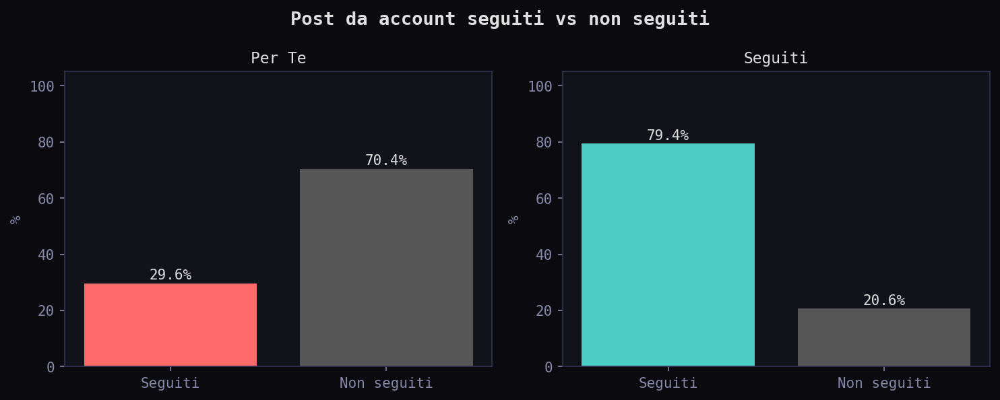
Il 70.4% dei tweet nel "Per Te" viene da gente che non segui. Il feed non e' tuo. L'algoritmo riempie 7 tweet su 10 con contenuti che ha scelto lui. Nel feed "Seguiti" il rapporto si inverte: 79.4% da account che segui, il 20.6% residuo sono retweet di gente che segui.
Ma non e' solo chi parla. E' quanti parlano. Il "Per Te" ha 505 autori unici su 800 tweet. I "Seguiti" ne hanno 266. Sembra che l'algoritmo ti esponga a piu' voci. Ma il dato di concentrazione racconta l'opposto.
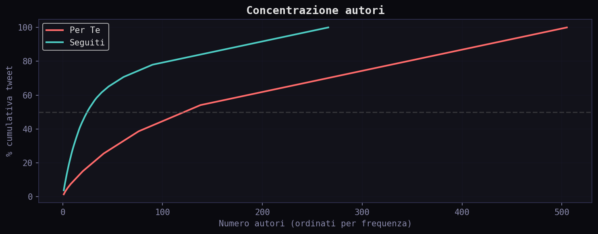
Nel feed "Seguiti" bastano 25 autori per il 50% dei tweet. Nel "Per Te" ne servono 122. L'algoritmo diluisce. Prende la tua cerchia stretta e la annacqua con centinaia di voci estranee. La sensazione di "diversita'" e' un'illusione: non stai esplorando, stai venendo disperso.
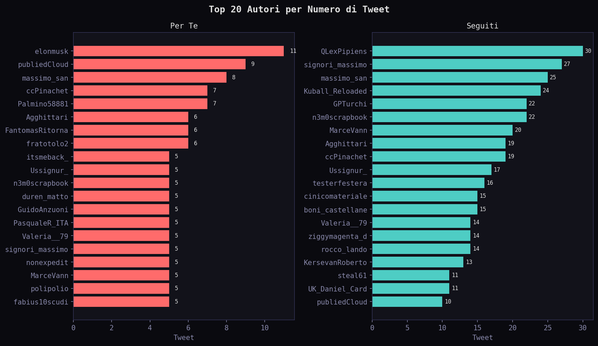
Il top autore nel "Seguiti" e' QLexPipiens con 30 tweet. Nel "Per Te" e' elonmusk con 11. L'algoritmo non amplifica i tuoi interessi. Li sostituisce.
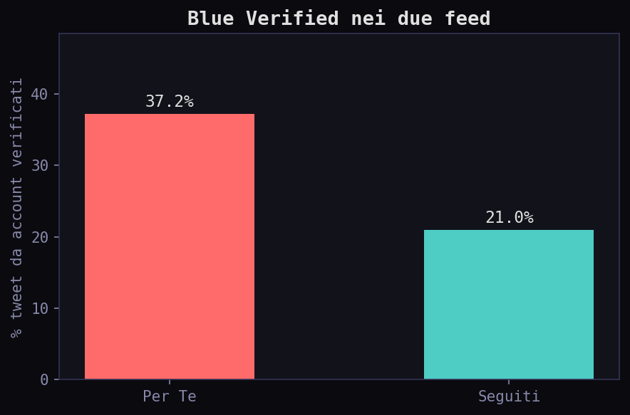
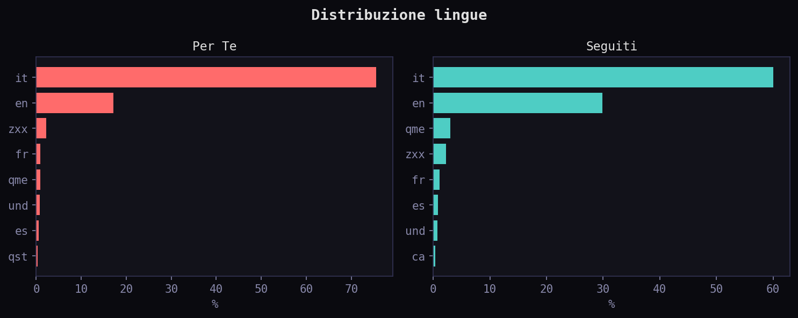
Il 37.2% dei tweet nel "Per Te" viene da account blue verified, contro il 21% nei "Seguiti". L'algoritmo premia chi paga. Sul fronte linguistico, il "Per Te" e' piu' italiano (75.5% vs 60%) su 19 lingue: l'algoritmo localizza, comprimendo il mix linguistico che hai scelto seguendo account internazionali.
// Il Prezzo della Rilevanza
Sezione 02. Latenza temporaleL'algoritmo Phoenix usa il dwellTimeMs e i segnali di engagement per calcolare uno score di rilevanza. Ma la rilevanza ha un costo: il tempo. Quanto tempo passa tra il momento in cui un tweet viene scritto e il momento in cui te lo mostra?
Per rispondere serve un dato che quasi nessuno considera: il timestamp_collected, cioe' l'istante in cui il tuo browser ha ricevuto quel tweet dall'API. Il delta tra created_at e timestamp_collected e' la latenza dell'algoritmo.
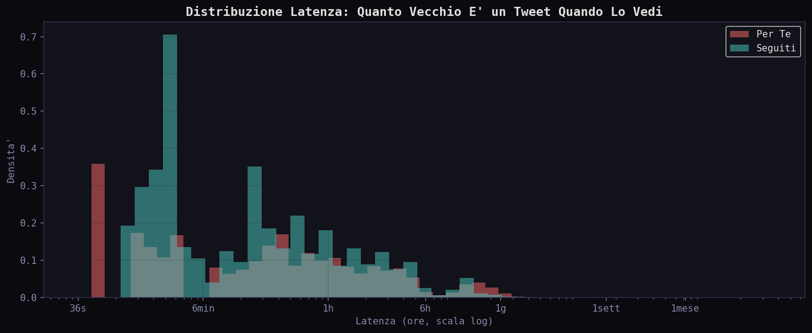
Un tweet nel "Per Te" ti arriva in media 11 ore e 51 minuti dopo essere stato scritto. Nei "Seguiti" dopo 4 ore e 8 minuti. L'algoritmo trattiene il contenuto quasi tre volte piu' a lungo. Lo tiene in coda, aspetta che accumuli engagement, poi te lo serve quando lo score e' abbastanza alto.
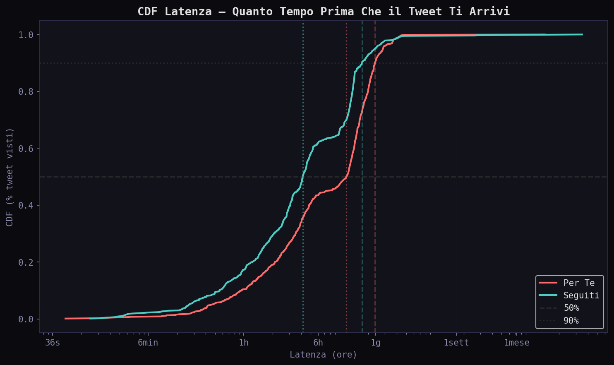
La CDF mostra il quadro completo. Il 50% dei tweet "Seguiti" arriva entro 4 ore. Per il "Per Te" ci vogliono quasi 12. Al 90esimo percentile: 17.3 ore per i "Seguiti", 23.6 per il "Per Te". La coda lunga e' simile, ma il corpo della distribuzione e' spostato di mezza giornata.
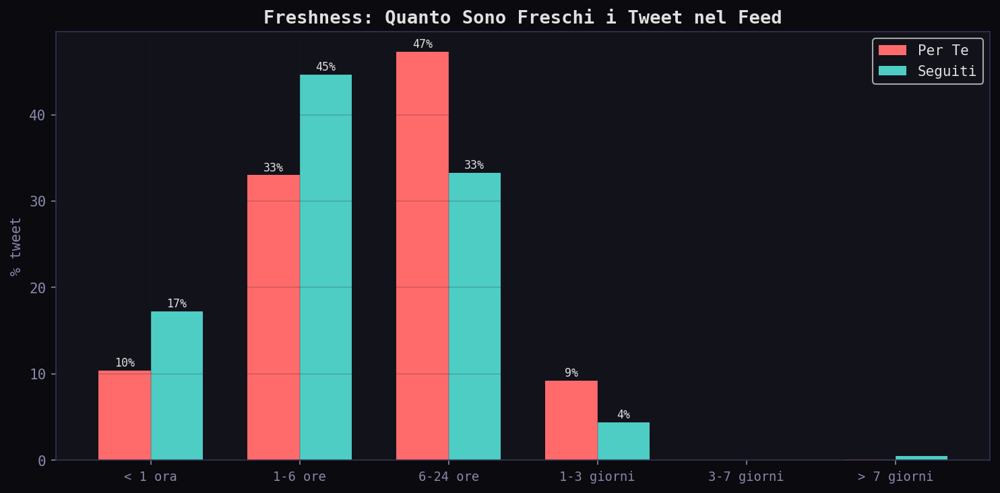
Meno di 1 ora: 17.2% nei "Seguiti", 10.4% nel "Per Te". Fascia 6-24 ore: 47.2% del "Per Te" contro 33.2% dei "Seguiti". L'algoritmo concentra il feed nella zona tra le 6 e le 24 ore: abbastanza vecchio da avere metriche di engagement stabili, abbastanza fresco da sembrare attuale.
Il paradosso della freschezza. Scrollando per 3.7 minuti il feed "Per Te", hai visto tweet che coprono 58 giorni di arco temporale. Nei "Seguiti" 144 giorni, ma con una mediana molto piu' vicina. L'algoritmo non ti mostra il "meglio di oggi". Ti mostra il meglio dell'ultima mezza giornata, piu' qualche picco virale dei giorni scorsi.
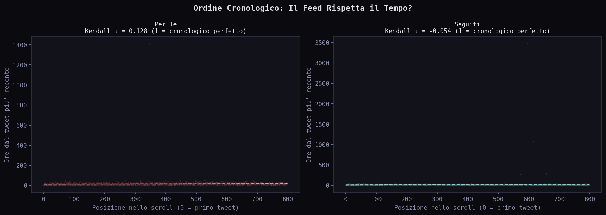
E il feed "Seguiti" e' cronologico? No. Kendall τ = -0.054, praticamente zero. Nessuno dei due feed rispetta l'ordine temporale. Anche il tab "Seguiti" e' filtrato. La differenza e' solo di grado, non di natura.
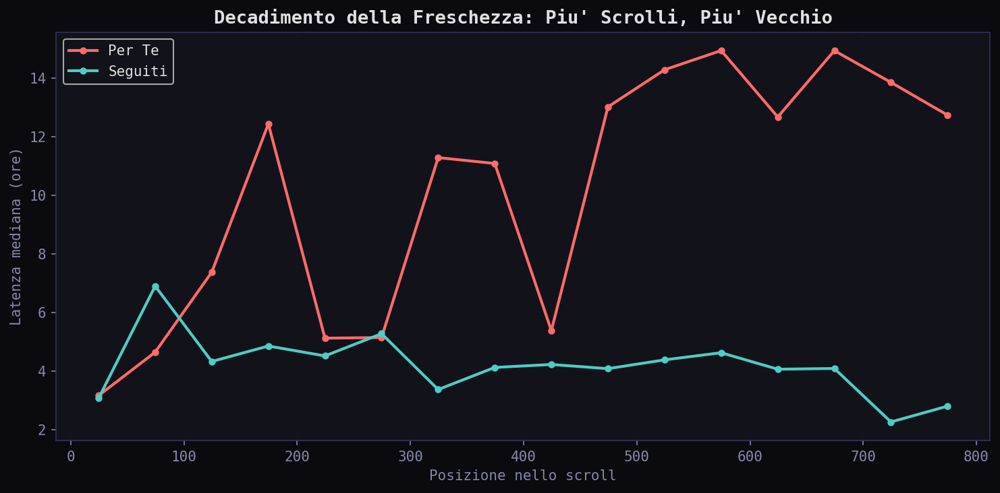
// Engagement: la Metrica Che Governa
Sezione 03. Like, retweet, reply, bookmarkL'algoritmo Phoenix calcola uno score basato sui segnali nascosti. Ma i segnali nascosti sono guidati dall'engagement visibile. Piu' un tweet ha like, piu' gente ci si ferma sopra, piu' il dwell time sale, piu' lo score cresce. E' un feedback loop. Quanto e' forte?
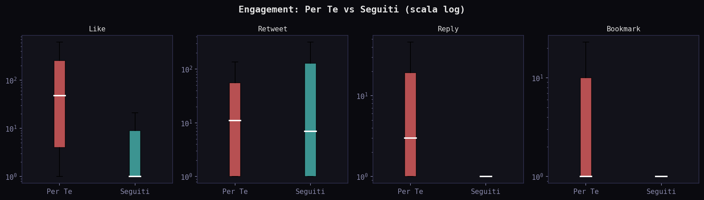
Il like mediano nel "Per Te" e' 48. Nei "Seguiti" e' zero. Ma attenzione: il "Per Te" mostra tweet con una latenza mediana di quasi 12 ore, i "Seguiti" di 4. I tweet nel "Per Te" hanno avuto piu' tempo per accumulare engagement. Lo zero dei "Seguiti" non significa che siano tweet ignorati: significa che sono piu' freschi. Il dato conferma pero' che l'algoritmo seleziona tweet che hanno gia' accumulato metriche, e per farlo li trattiene piu' a lungo.
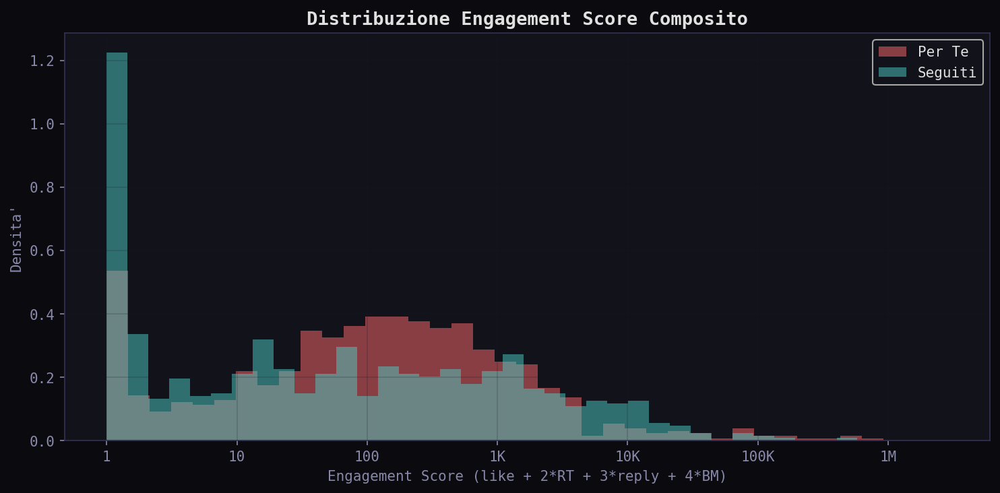
Lo score composito (pesato per tipo di interazione) mostra mediana 124 nel "Per Te" contro 42 nei "Seguiti". Vale lo stesso caveat della latenza: i tweet del "Per Te" sono piu' vecchi, hanno avuto piu' tempo per accumulare metriche. Il dato interessante e' un altro: la distribuzione dello score nel "Per Te" e' piu' compressa. L'algoritmo scarta sia i tweet con engagement troppo basso sia quelli con picchi anomali, concentrando il feed in una fascia di viralita' media. I "Seguiti" hanno tutto lo spettro: zeri e picchi.
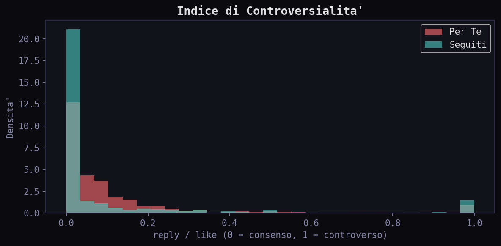
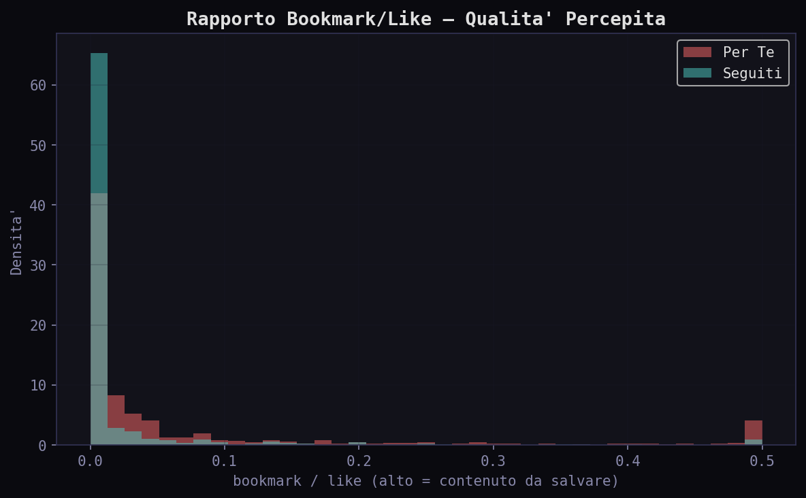
I rapporti reply/like e bookmark/like normalizzano il bias temporale: sono frazioni, non valori assoluti. L'indice di controversialita' nel "Per Te" ha mediana 0.048 contro 0.0 nei "Seguiti": l'algoritmo non evita i tweet controversi. Il rapporto bookmark/like e' 0.011 vs 0.0: il contenuto selezionato viene salvato proporzionalmente di piu'. Phoenix non filtra via la controversia. La seleziona.
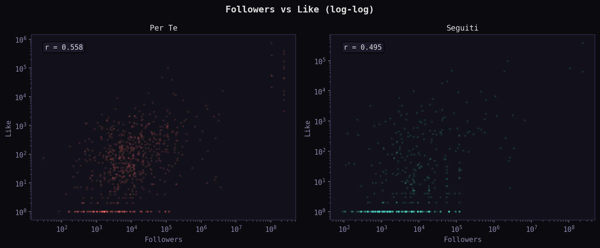
La correlazione followers-like e' 0.558 nel "Per Te" e 0.495 nei "Seguiti". Nel "Per Te" la correlazione e' piu' stretta: l'algoritmo favorisce tweet dove engagement e reach si muovono insieme. Nei "Seguiti" trovi piu' varianza: account piccoli con molto engagement relativo, account grandi ignorati.
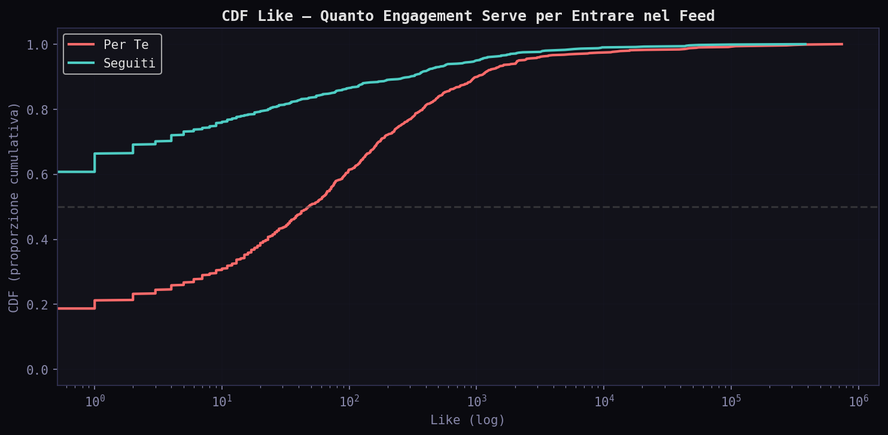
// L'Emozione Non Cambia
Sezione 04. Sentiment, emozioni, intensita'La narrativa dominante dice che l'algoritmo amplifica la rabbia. I dati dicono altro.
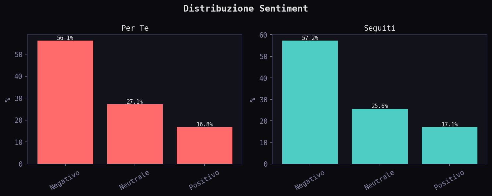
Il sentiment e' quasi identico tra i due feed. 56.1% negativo nel "Per Te", 57.2% nei "Seguiti". La KL divergence sul sentiment e' 0.0008 bit: praticamente zero, nessuna deformazione misurabile. L'emozione top e' Rabbia in entrambi i feed. In questo campione non emerge una manipolazione misurabile del sentiment. L'emozione dominante e' la stessa in entrambi i feed, con la stessa distribuzione.
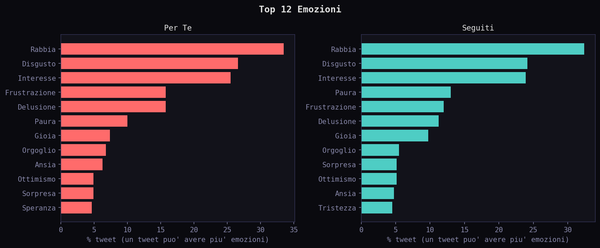
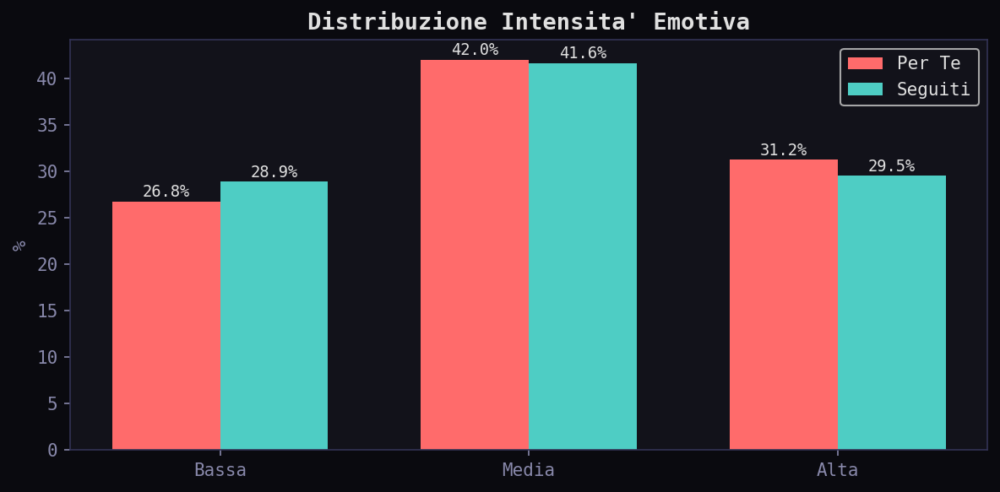
L'intensita' alta e' al 31.2% nel "Per Te" e 29.5% nei "Seguiti". Un delta di 1.7 punti percentuali. L'algoritmo spinge marginalmente di piu' i contenuti ad alta intensita', ma la differenza e' statistically insignificant rispetto alla varianza naturale del campione.
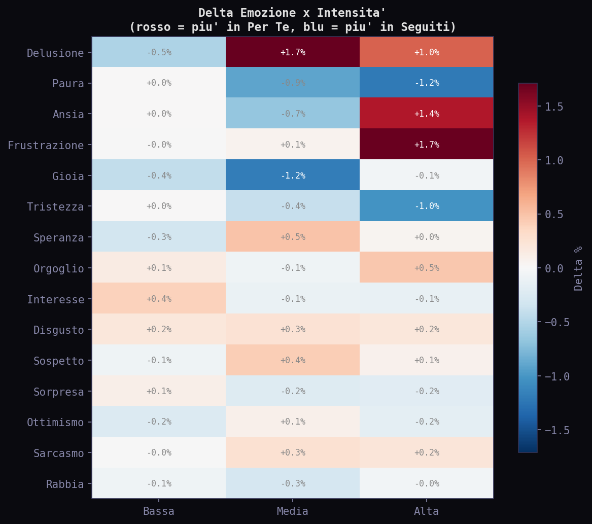
La heatmap del delta mostra le differenze granulari. L'algoritmo amplifica leggermente Interesse e Ottimismo ad alta intensita'. Deprime la Preoccupazione a media intensita'. Ma nessuna cella supera il ±2%. La manipolazione emotiva, se esiste, e' sotto la soglia di rilevabilita' con questo campione.
Il dato. In questo campione non emerge una deformazione emotiva misurabile tra i due feed. La deformazione che misuriamo e' strutturale: chi vedi, quanto e' vecchio, quanto engagement ha. Servirebbero campioni piu' ampi e ripetuti nel tempo per escludere del tutto una manipolazione emotiva, ma su questi dati la KL divergence sul sentiment e' indistinguibile da zero.
// La Matematica della Deformazione
Sezione 05. Entropia, KL divergence, GiniPer quantificare quanto l'algoritmo deforma il feed servono strumenti precisi. L'entropia di Shannon misura la diversita'. La KL divergence misura la distanza tra due distribuzioni. Il coefficiente di Gini misura la disuguaglianza.
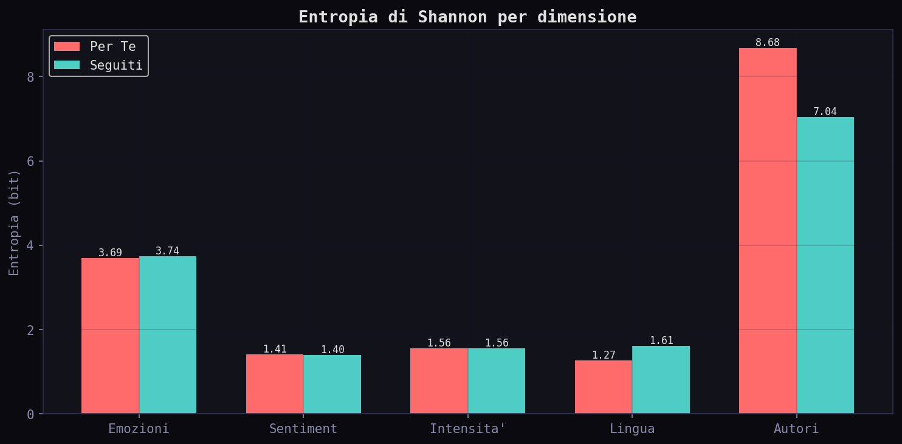
L'entropia degli autori nel "Per Te" e' 8.68 bit contro 7.04 nei "Seguiti". Piu' diverso, ma diverso artificialmente. L'algoritmo inietta voci che non hai scelto, aumentando l'entropia. L'entropia delle emozioni e' simile (3.69 vs 3.74): conferma che la deformazione non e' emotiva. La differenza piu' grande e' nella lingua: 1.27 bit nel "Per Te" contro 1.61 nei "Seguiti". L'algoritmo comprime la varieta' linguistica.
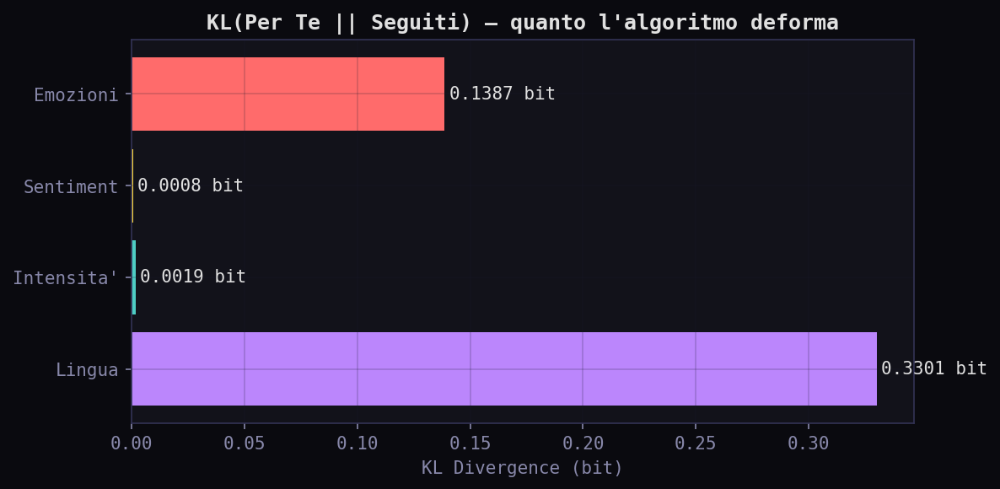
| Dimensione | KL Divergence (bit) | Interpretazione |
|---|---|---|
| Lingua | 0.330 | Deformazione forte: l'algoritmo localizza, comprime il multilinguismo |
| Emozioni | 0.139 | Deformazione moderata: redistribuzione interna delle emozioni |
| Topic | 0.048 | Deformazione minima: gli argomenti sono simili |
| Intensita' | 0.002 | Nessuna deformazione rilevabile |
| Sentiment | 0.001 | Zero. Il sentiment e' identico. |
La deformazione piu' grande e' sulla lingua: 0.33 bit. L'algoritmo decide che se sei italiano vuoi contenuto in italiano, anche se segui account in inglese e francese. La seconda e' sulle emozioni: 0.14 bit, una redistribuzione interna (non un aumento di negativita'). Sentiment e intensita' sono a zero. La manipolazione emotiva e' un mito, almeno su questo campione.
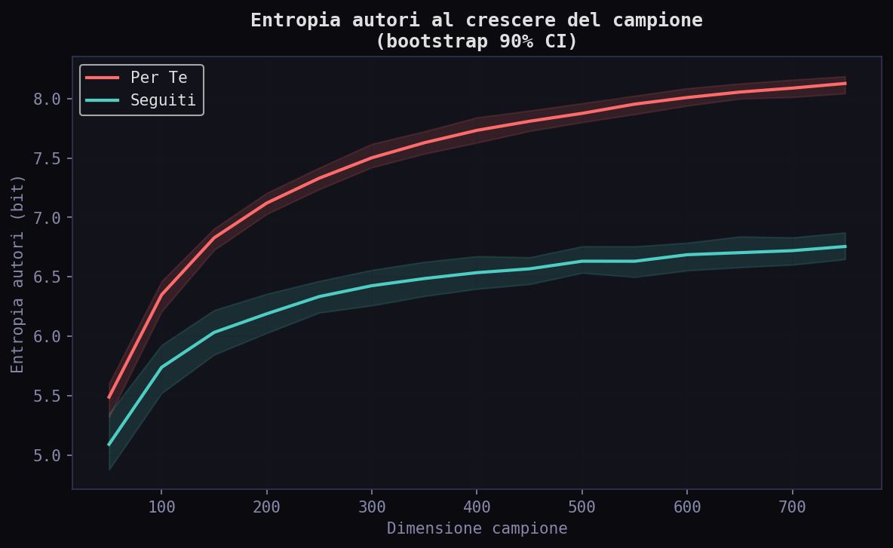
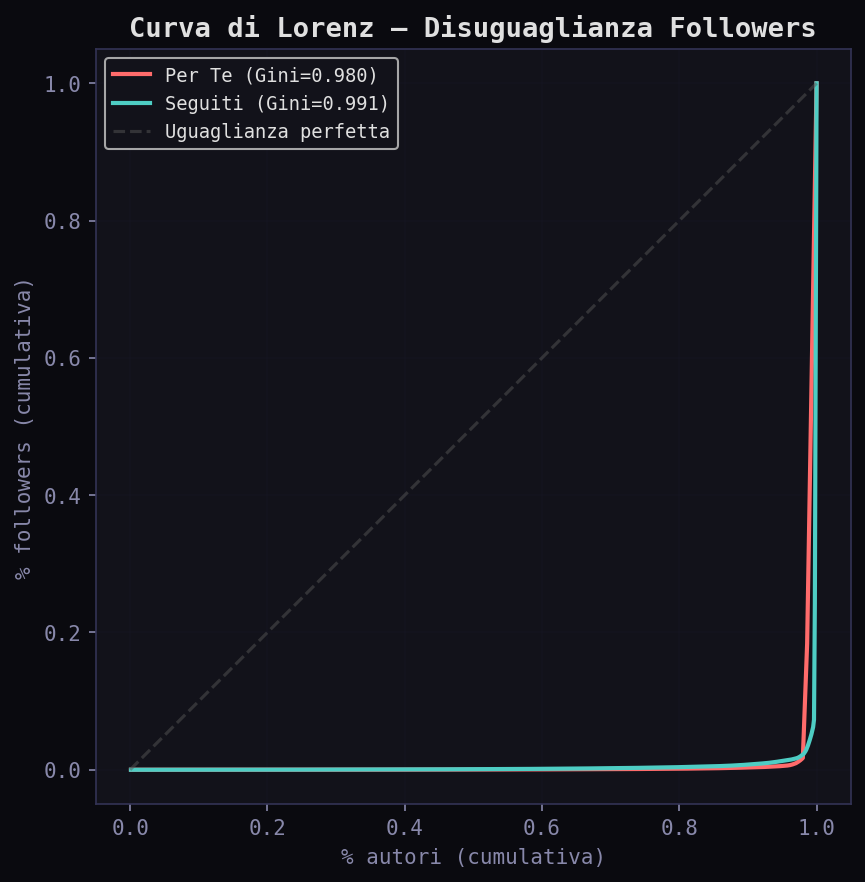
Il coefficiente di Gini sui followers e' 0.98 nel "Per Te" e 0.99 nei "Seguiti". Disuguaglianza estrema in entrambi. Twitter e' un sistema dove l'1% degli account concentra quasi tutto il reach. L'algoritmo non crea questa disuguaglianza. La amplifica leggermente spostando il baricentro verso gli account piu' grandi.
// Argomenti e Rete
Sezione 06. Topic, hashtag, grafo delle menzioni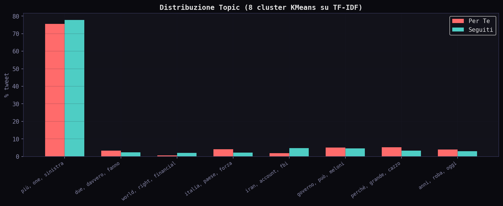
Il topic modeling con TF-IDF e KMeans su 8 cluster mostra una KL divergence di soli 0.048 bit. I due feed parlano degli stessi argomenti. Ma le differenze nei cluster minori sono rivelatrici.
Il "Per Te" spinge piu' Italia/governo/Europa (cluster 3: 4.2% vs 2.1%) e commento forte (cluster 6: 5.2% vs 3.4%). I "Seguiti" hanno piu' Iran/FBI/Patel (cluster 4: 4.8% vs 1.9%): il tuo interesse geopolitico specifico che l'algoritmo diluisce a favore di contenuto generalista.
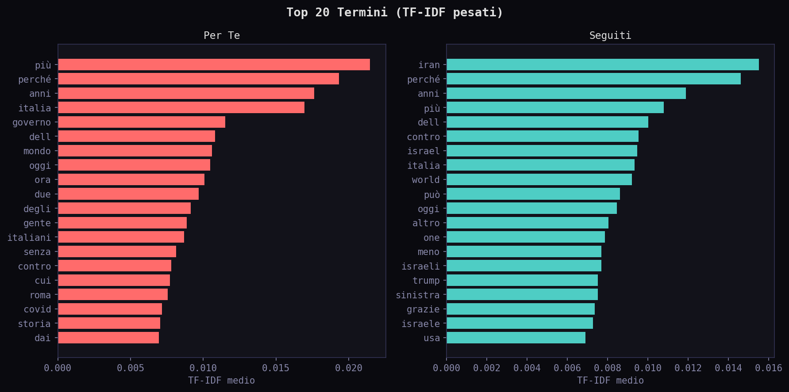
I termini top del "Per Te" sono piu', perche', italia, governo. Nei "Seguiti": iran, perche', anni. L'algoritmo ti porta verso il mainstream italiano. Tu avevi scelto altro.
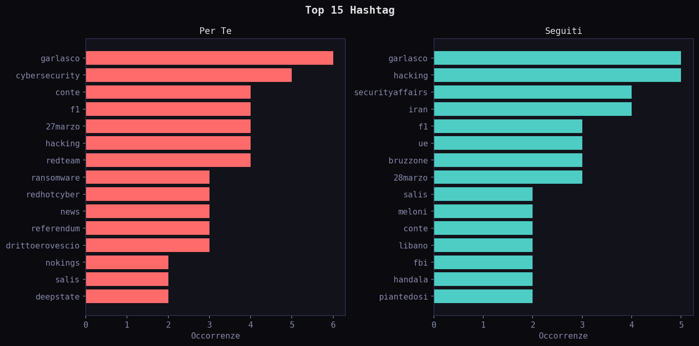
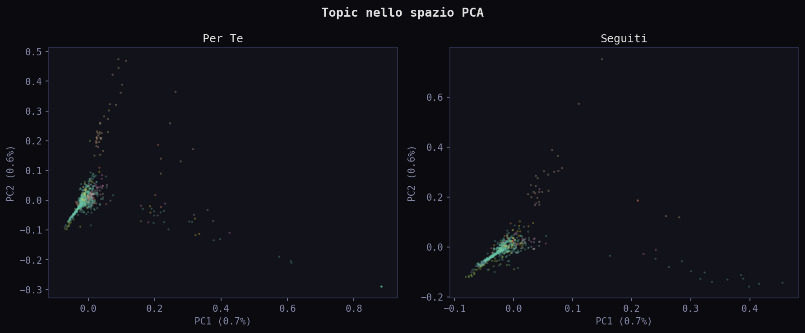
La Jaccard similarity sugli hashtag e' solo 0.17: 41 hashtag in comune su 246. 137 esclusivi del "Per Te", 68 esclusivi dei "Seguiti". Due mondi quasi separati con appena il 17% di sovrapposizione.
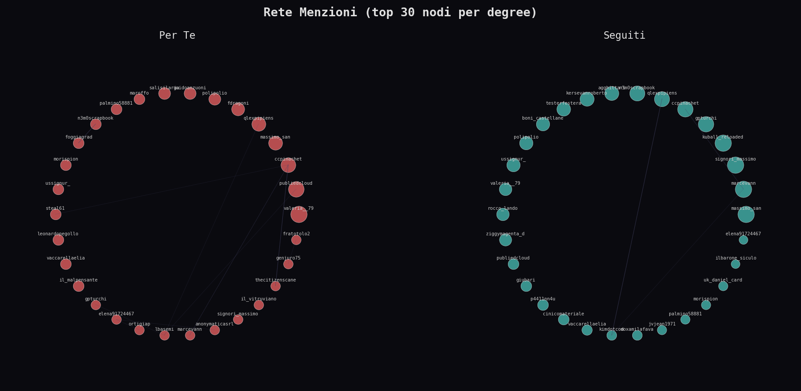
La rete delle menzioni racconta la differenza piu' netta. I "Seguiti" hanno 525 archi contro 219 del "Per Te". Piu' del doppio. I top menzionati nei "Seguiti" (massimo_san, marcevann, signori_massimo, tutti a 25 menzioni) formano una community stretta. Nel "Per Te" la rete e' frammentata: il nodo piu' menzionato arriva a 10. L'algoritmo distrugge la rete. Ti mostra contenuto individuale, non conversazioni.
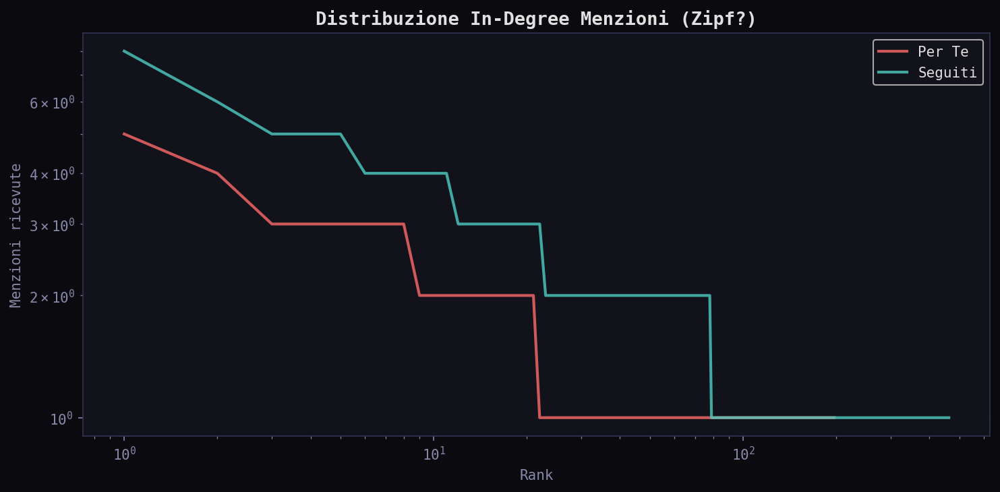
// Followers e Infrastruttura
Sezione 07. Chi ti mostra l'algoritmo, e da dove vengono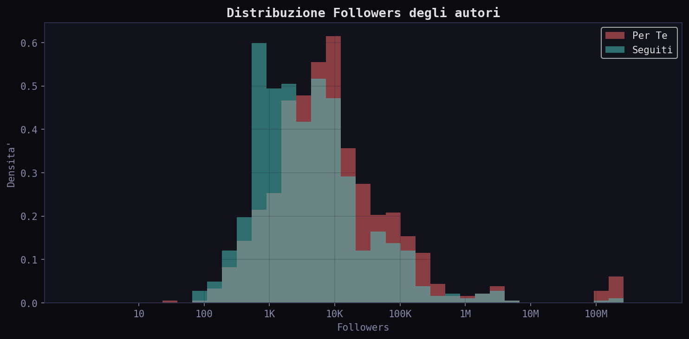
Il followers mediano degli autori nel "Per Te" e' 6.868, nei "Seguiti" 3.406. L'algoritmo favorisce account il doppio piu' grandi. Il mean e' ancora piu' estremo: 4 milioni nel "Per Te" contro 784K nei "Seguiti". Gli outlier (i mega-account) dominano la distribuzione.
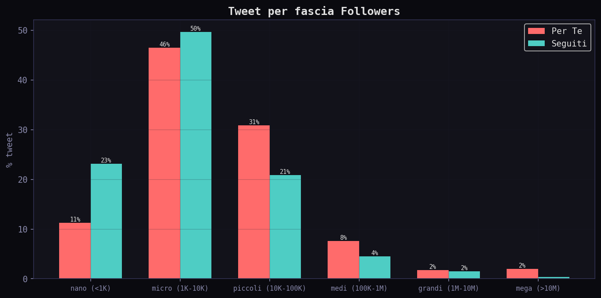
Nella fascia 10K-100K il "Per Te" ha il 30.9% dei tweet, i "Seguiti" il 20.9%. Nella fascia mega (>10M): 2% nel "Per Te" contro 0.4% nei "Seguiti". L'algoritmo amplifica i grandi account di un fattore 5.
Ma i followers da soli raccontano meta' della storia. Il rapporto following/followers rivela la natura dell'account: chi ha ratio basso (< 0.01) e' un broadcaster puro (media, politici, celebrity). Chi ha ratio vicino a 1 e' un utente normale. Chi ha ratio > 1 e' un consumer: segue piu' di quanto e' seguito.
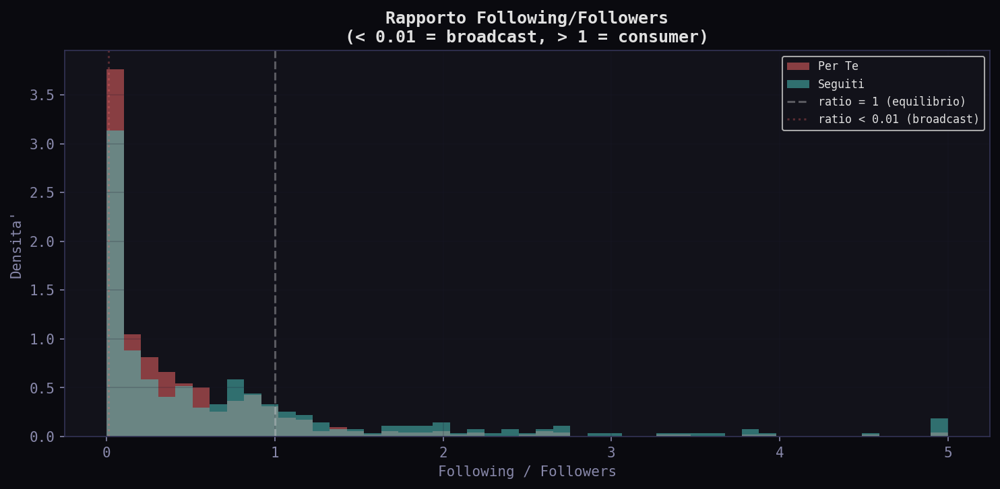
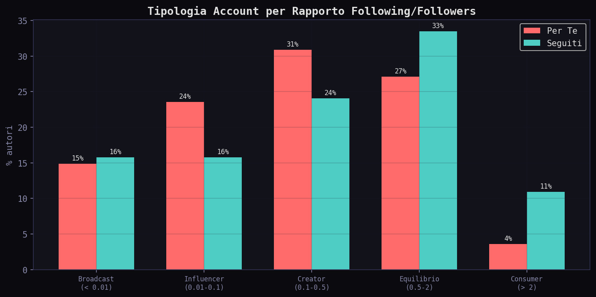
Il rapporto mediano nel "Per Te" e' 0.211, nei "Seguiti" 0.365. Gli autori nel "Per Te" seguono proporzionalmente meno gente rispetto a quanti li seguono: sono piu' broadcaster, meno conversatori. I "Seguiti" hanno il doppio di account "consumer" (23.3% vs 11.7%): gente normale che segue piu' di quanto e' seguita. L'algoritmo favorisce chi trasmette, non chi partecipa.
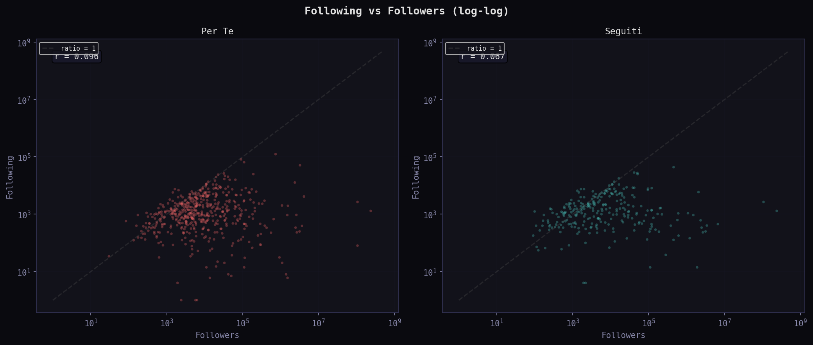
Lo scatter log-log mostra la struttura. Nel "Per Te" i punti sotto la diagonale (piu' followers che following) dominano: account che trasmettono. La correlazione following-followers e' quasi zero (0.096): le due metriche sono indipendenti, perche' l'algoritmo seleziona per reach, non per reciprocita'. Nei "Seguiti" la nuvola e' piu' vicina alla diagonale: account piu' equilibrati.
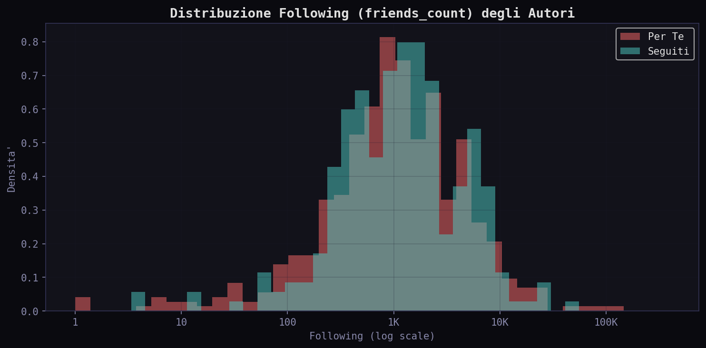
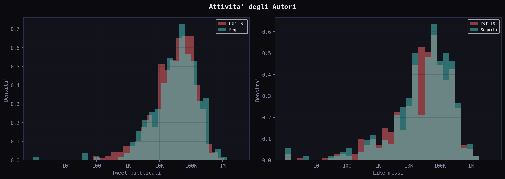
Il following mediano e' simile (1.045 "Per Te" vs 1.173 "Seguiti") ma il significato cambia: nel "Per Te" 1.045 following con 6.820 followers mediani fa ratio 0.15. Nei "Seguiti" 1.173 following con 4.767 followers fa ratio 0.25. L'attivita' (tweet pubblicati e like messi) e' comparabile tra i due feed: non e' che l'algoritmo ti mostra gente piu' attiva. Ti mostra gente con piu' audience.
Ma da dove vengono questi account? Lo Snowflake ID di Twitter codifica nel user ID il timestamp di creazione, il datacenter e il worker node.
Su 771 autori unici, 457 hanno Snowflake ID reali (post-2010), 314 sono pre-Snowflake. Il timestamp nel Snowflake restituisce la data di creazione reale dell'account, al millisecondo. Ma il dato forte e' un altro: il datacenter ID e il worker ID ti dicono dove fisicamente e' stato creato l'account. Tempo + luogo.
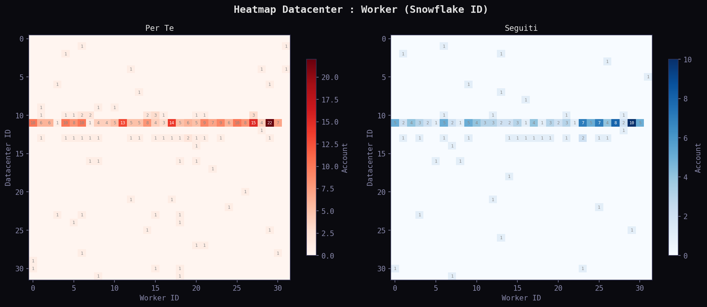
Il nodo piu' popolato in entrambi i feed e' DC:11:WK:29 con 22 account nel "Per Te" e 10 nei "Seguiti". Ma la concentrazione su un nodo da sola non significa nulla: Twitter ha pochi datacenter e milioni di utenti. Il segnale che conta e' l'incrocio: account creati nello stesso minuto E sullo stesso datacenter.
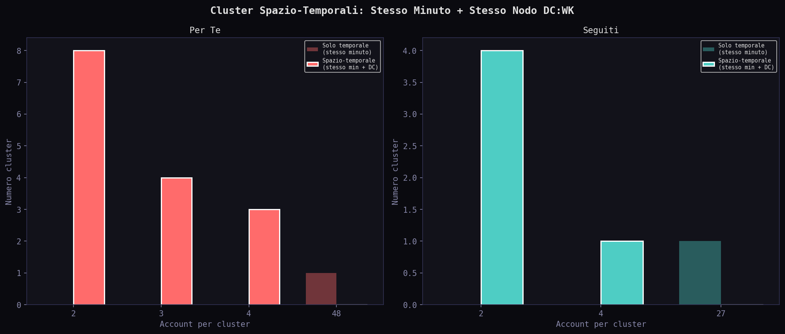
48 account creati nello stesso minuto nel "Per Te". Sembra sospetto. Ma se guardi solo il tempo, non dice niente: potrebbe essere un picco globale di iscrizioni. Quando filtri per stesso minuto e stesso datacenter, emergono 15 cluster spazio-temporali: il piu' grande ha 4 account creati nello stesso minuto sullo stesso DC. Nei "Seguiti" sono 5 cluster, il piu' grande sempre da 4. Numeri piccoli, ma il metodo e' quello giusto: il segnale infrastrutturale c'e' solo quando tempo e luogo convergono.
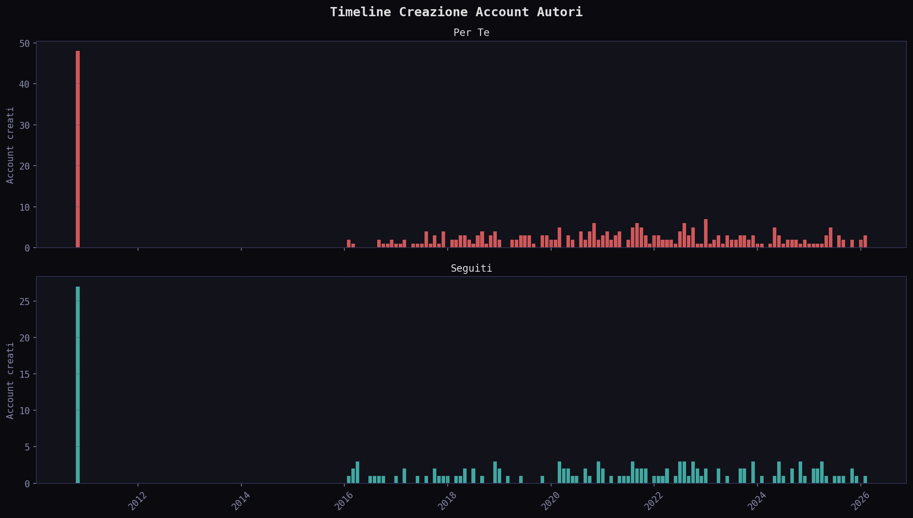
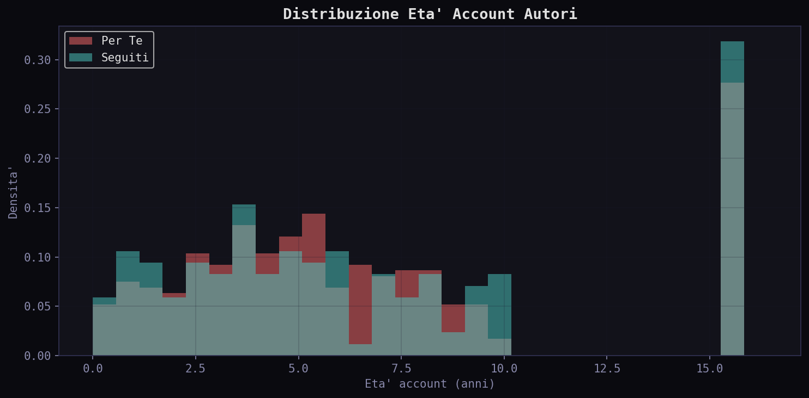
L'eta' mediana degli account e' simile: ~5.4 anni in entrambi. L'algoritmo non preferisce account vecchi o nuovi. Ma la distribuzione nei "Seguiti" ha una coda piu' pesante verso account recenti: segui gente nuova, l'algoritmo no.
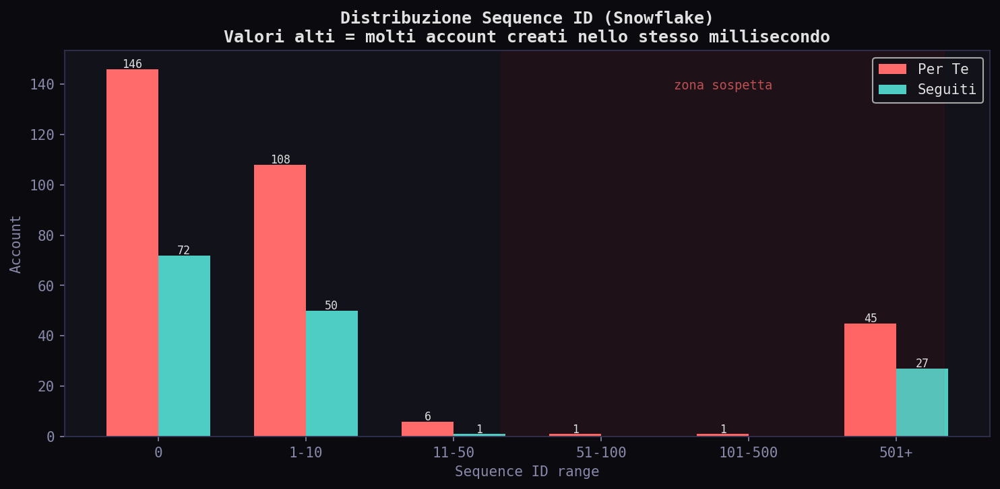
47 account nel "Per Te" con sequence ID > 50, 27 nei "Seguiti". Il massimo e' 4001 in entrambi. Ma un sequence alto senza coincidenza sul nodo significa solo che Twitter aveva traffico in quel millisecondo. Il segnale infrastrutturale c'e' solo quando tempo, nodo e sequence convergono. In questo campione non convergono.
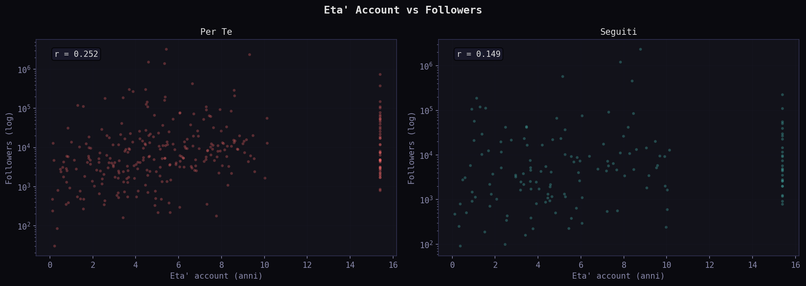
// Il Quadro Completo
Sezione 08. Radar, correlazioni, pattern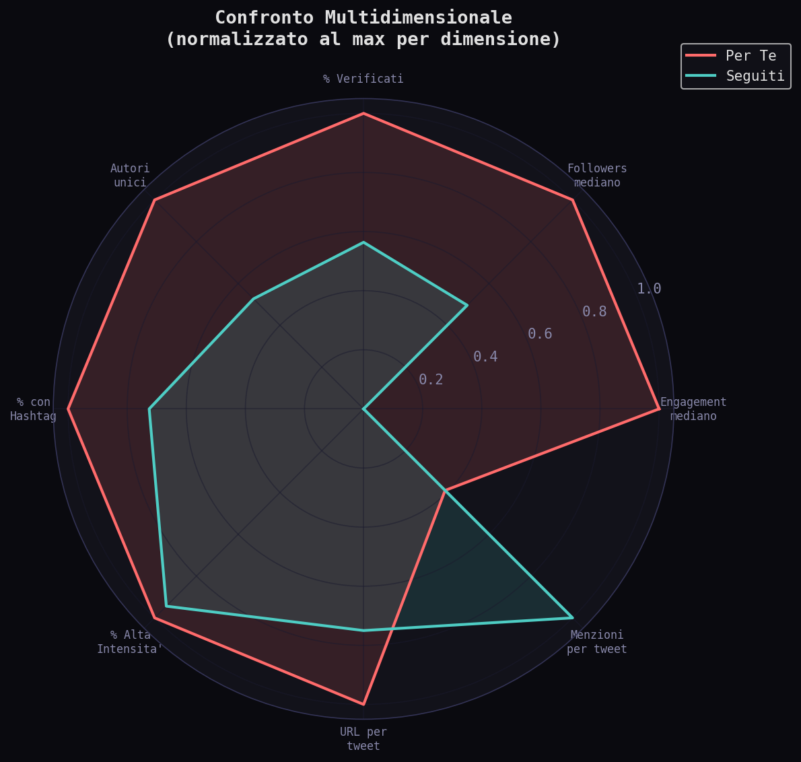
Il radar chart riassume le 8 dimensioni. Il "Per Te" domina su engagement, followers, verificati. I "Seguiti" dominano su autori unici normalizzati per la cerchia, hashtag, menzioni per tweet. Due profili diversi: uno ottimizzato per metriche, l'altro per relazioni.
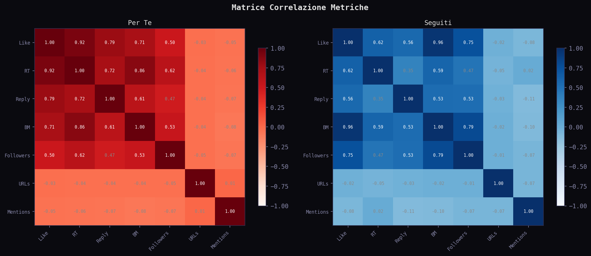
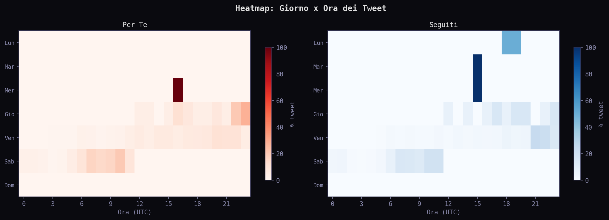
La matrice di correlazione nel "Per Te" e' piu' strutturata: like, retweet e reply sono piu' correlati tra loro. L'algoritmo seleziona tweet dove tutte le metriche si muovono insieme. Nei "Seguiti" la struttura e' piu' debole: trovi tweet con tanti like e zero reply, o tanti reply e zero like. Piu' varianza, meno pattern.
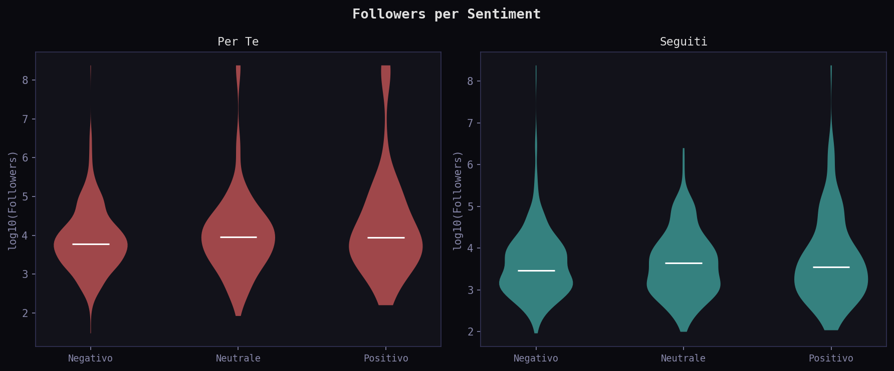
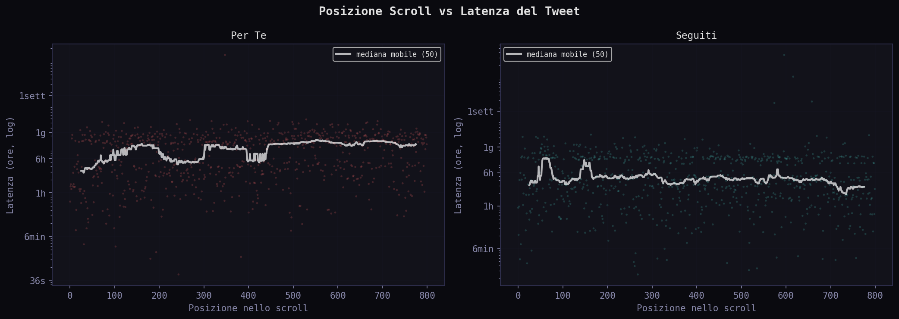
// Il Feed Come Filtro di Sopravvivenza
Sezione 09. Survival analysisSe un tweet e' un organismo, il feed e' un ecosistema con un tasso di mortalita'. La maggior parte dei tweet muore prima di essere vista. Pochi sopravvivono abbastanza da comparire nel tuo scroll. La funzione di sopravvivenza S(t) misura la probabilita' che un tweet non sia ancora apparso dopo t ore.
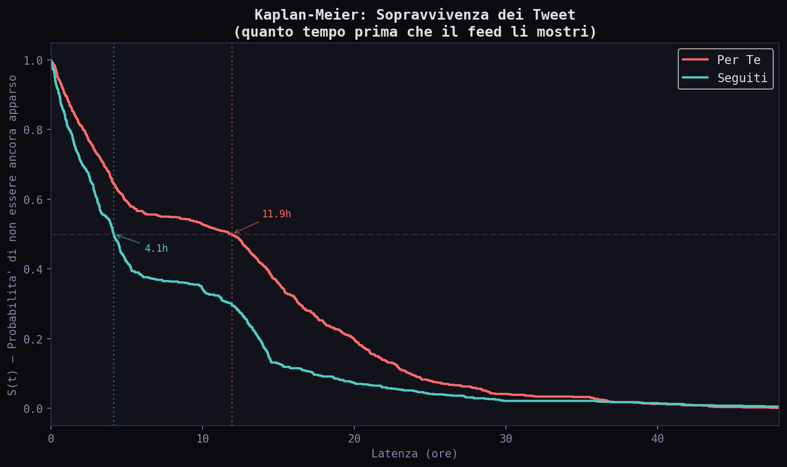
La curva Kaplan-Meier dice tutto. Il tempo mediano di sopravvivenza nel "Per Te" e' 11.92 ore, nei "Seguiti" 4.14 ore. Ma la forma delle curve e' diversa: i "Seguiti" hanno un crollo rapido nelle prime ore (molti tweet freschi), poi una coda lenta. Il "Per Te" scende piu' gradualmente: l'algoritmo distribuisce la visibilita' nel tempo.
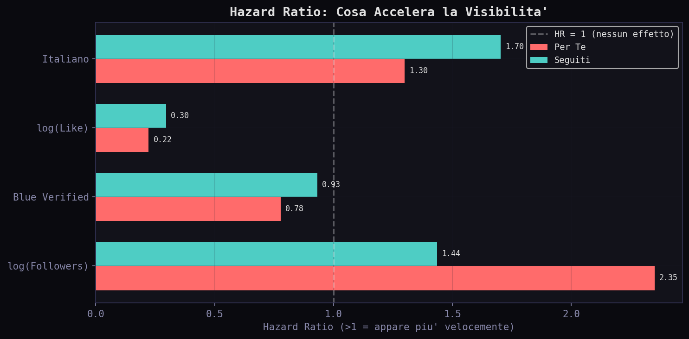
L'analisi tipo Cox (via regressione logistica sui quantili di latenza) rivela gli hazard ratio. Nel "Per Te": log(Followers) HR = 2.35.piu' follower hai, piu' velocemente il tuo tweet appare. log(Like) HR = 0.22.tweet con piu' like appaiono piu' tardi. Questo effetto riflette probabilmente il meccanismo di accumulo: i tweet ad alto engagement vengono trattenuti piu' a lungo prima di essere mostrati, e il numero di like al momento della cattura e' correlato con il tempo trascorso. Italiano HR = 1.30.contenuto italiano arriva leggermente prima.
Il feed non e' un ranking. E' un filtro di sopravvivenza. La maggior parte dei tweet non sopravvive. Quelli che sopravvivono nel "Per Te" devono avere followers alti, metriche solide e lingua giusta. Il "Seguiti" e' piu' democratico: la sopravvivenza dipende meno dalle feature.
// Code Pesanti
Sezione 10. Power law e disuguaglianzaSe l'engagement segue una power law, allora pochi tweet concentrano quasi tutto. L'esponente α dice quanto: piu' α e' basso, piu' la coda e' pesante, piu' la disuguaglianza e' estrema.
Tutti gli α sono sotto 0.5, compatibili con un regime heavy-tail (fit Pareto). Il "Per Te" ha α followers = 0.358 contro 0.433 dei "Seguiti". Coda piu' pesante: l'algoritmo concentra ulteriormente. Sui like la differenza e' simile: 0.316 vs 0.281. In entrambi i feed la distribuzione e' compatibile con una power law, ma l'algoritmo sposta il baricentro verso i valori estremi.
// Il Grafo Che Si Dissolve
Sezione 11. Betweenness, assortativity, LouvainLa betweenness centrality misura chi sta al crocevia del flusso informativo. Nei "Seguiti" il nodo top e' marcevann. Nel "Per Te" e' ccpinachet. Ma il dato forte non e' chi, e' quanto: la betweenness media e' bassissima in entrambi (10-6), perche' le reti di menzioni su Twitter sono sparse. La differenza e' strutturale.
L'assortativity rivela la natura delle due reti. I "Seguiti" hanno r = +0.023: positivo, assortativo. Account simili parlano con account simili. Community. Il "Per Te" ha r = -0.042: negativo, disassortativo. Account grandi parlano con account piccoli. Broadcast. L'algoritmo trasforma una rete di conversazione in una rete di trasmissione.
La modularita' Louvain racconta un paradosso. Il "Per Te" ha Q = 0.966 con 77 community su 292 nodi. I "Seguiti" hanno Q = 0.909 con 68 community su 548 nodi. Il "Per Te" ha modularita' piu' alta? Si', ma perche' la rete e' frammentata in isole minuscole che non parlano tra loro. Nei "Seguiti" le community sono piu' grandi, piu' interconnesse, piu' vive. La modularita' alta del "Per Te" e' la modularita' della solitudine: tanti gruppi piccoli, nessuna conversazione.
// Cosa Guida la Visibilita'
Sezione 12. Mutual InformationLa KL divergence misura la distanza tra distribuzioni. La Mutual Information misura quanto una variabile spiega un'altra. Piu' potente per capire cosa guida l'algoritmo.
La feature che spiega di piu' la selezione nel "Per Te" e' favorite_count con MI = 0.173 bit. Seguono reply (0.082) e bookmark (0.073). Followers e' solo a 0.039. Blue verified a 0.023. URL e menzioni a zero. L'algoritmo seleziona per engagement, non per dimensione dell'account. I like sono il segnale dominante.
Nel "Per Te" le feature che guidano la posizione nello scroll sono like (0.169) e followers (0.167), quasi alla pari. Nei "Seguiti" domina followers (0.186) e retweet (0.142), i like contano meno (0.096). Due logiche diverse: il "Per Te" ordina per engagement, i "Seguiti" per reach e propagazione.
// Auto-Eccitazione
Sezione 13. Processi di HawkesNell'Attenzione Invisibile abbiamo usato i processi di Hawkes per modellare come un tweet attira attenzione nel tempo. Ora li usiamo sul campo: il flusso di tweet nel feed e' un processo che si auto-eccita?
Ogni evento (tweet mostrato) aumenta la probabilita' del successivo. μ e' il rate di base. α e' la forza dell'eccitazione. β e' la velocita' di decadimento. Il rapporto critico e' il branching ratio n* = α/β: se supera 1, il processo e' esplosivo.
I branching ratio sono entrambi vicini a 1: 0.969 nel "Per Te", 0.976 nei "Seguiti". Entrambi i feed sono al limite critico: quasi esplosivi, ma stazionari. Il coefficiente di variazione dei tempi inter-evento e' 5.55 nel "Per Te" e 5.17 nei "Seguiti" (un processo Poisson avrebbe CV = 1). Entrambi mostrano clustering forte: i tweet arrivano a burst, non uniformemente.
Il QQ plot contro l'esponenziale mostra la deviazione dalla Poissonianita'. Entrambi i feed deviano, ma in modo diverso: il "Per Te" ha piu' eventi ravvicinati (clustering piu' forte nella coda sinistra). Il "Seguiti" devia di piu' nella coda destra (pause piu' lunghe tra burst). L'auto-eccitazione c'e' in entrambi, ma il "Per Te" produce burst piu' compatti. Il processo osservato e' una proiezione del ranking algoritmico sulla sequenza di visualizzazione, non il processo generativo globale: misuriamo come l'algoritmo ti serve i contenuti, non come li produce.
Il cerchio si chiude. Nell'Attenzione Invisibile abbiamo modellato l'attenzione come processo di Hawkes nel codice di Phoenix. Ora misuriamo lo stesso processo nel feed reale. I dati confermano la teoria: il feed opera al limite critico (n* ~ 1), auto-eccitandosi senza mai esplodere. Un sistema progettato per massimizzare il tempo che passi a scrollare.
// Script e Dati
Sezione 14. 15 script, un terminaleTutto il codice e' su GitHub, nella cartella scripts/il-feed-non-e-tuo/. 15 script, da eseguire in ordine.
| Script | Cosa fa | Output |
|---|---|---|
00_extract.py | Estrae da MongoDB in CSV | data/per_te.csv, data/seguiti.csv |
01_analisi_strutturale.py | Following ratio, temporale, verified, concentrazione, lingua | 01-05_*.png |
02_analisi_sentiment.py | Sentiment, emozioni, intensita', heatmap delta | 06-09_*.png |
03_analisi_engagement.py | Box plot, distribuzioni, controversialita', followers vs like | 10-13_*.png |
04_information_theory.py | Entropia Shannon, KL divergence, bootstrap autori | 14-16_*.png |
05_analisi_topic_hashtag.py | Topic clustering TF-IDF, hashtag, top termini, PCA | 17-20_*.png |
06_analisi_rete_followers.py | Distribuzione followers, fasce, rete menzioni, Gini | 21-25_*.png |
07_snowflake_analysis.py | Snowflake ID: timeline, heatmap DC:WK, sequence, cluster | 26-31_*.png |
08_grafici_extra.py | Score composito, correlazione, CDF, violin, radar | 32-39_*.png |
09_analisi_temporale.py | Latenza, freshness, ordine cronologico, decadimento | 40-47_*.png |
10_survival_analysis.py | Kaplan-Meier, Cox hazard ratios, stratificazione | 48-51_*.png |
11_power_laws.py | Fit Pareto, CCDF, confronto esponenti alpha | 52-54_*.png |
12_graph_theory.py | Betweenness, assortativity, Louvain modularity | 55-58_*.png |
13_mutual_information.py | MI feature-feed, MI feature-scroll, heatmap MI | 59-61_*.png |
14_hawkes_process.py | Fit Hawkes, branching ratio, QQ Poisson | 62-65_*.png |
15_followers_ratio.py | Rapporto following/followers, fasce, attivita' | 66-71_*.png |
Lo script 00_extract.py estrae i dati da MongoDB in CSV. Tutti gli altri leggono i CSV e non richiedono accesso al database. L'output finisce in output/: 71 grafici PNG e un JSON di statistiche per ogni script. Se vuoi replicare l'analisi sui tuoi dati, basta sostituire i CSV mantenendo lo stesso schema.
// Cosa Abbiamo Misurato
Sezione 15. Il verdetto dei numeriL'esperimento risponde a una domanda semplice: cosa fa l'algoritmo al tuo feed? La risposta e' nei numeri.
| Cosa fa l'algoritmo | Misura | Impatto |
|---|---|---|
| Inietta contenuto non scelto | 70.4% da non-followed | 7 tweet su 10 non li hai chiesti |
| Trattiene il contenuto | Latenza 11.85h vs 4.14h | Quasi 3x piu' lento |
| Seleziona per engagement | Like mediano 48 vs 0 | Meta' dei tuoi tweet ha 0 like |
| Amplifica i grandi account | Followers mediano 6.8K vs 3.4K | Chi paga e chi ha reach, vince |
| Localizza la lingua | KL lingua 0.33 bit | Comprime il multilinguismo scelto |
| Distrugge la rete | 525 archi vs 219 | Le conversazioni spariscono |
| Nessuna manipolazione sentiment misurabile | KL sentiment 0.001 bit | Distribuzione emotiva identica tra i due feed |
| Filtra per sopravvivenza | Kaplan-Meier: 11.92h vs 4.14h | Piu' followers = apparizione piu' rapida (HR 2.35) |
| Accentua le code pesanti | Pareto alpha 0.36 vs 0.43 | Pochi dominano tutto, l'algoritmo amplifica |
| Trasforma community in broadcast | Assortativity -0.042 vs +0.023 | Da rete di pari a rete di trasmissione |
| Opera al limite critico | Hawkes n* = 0.97 | Auto-eccitazione massima senza esplosione |
In questo campione la deformazione emotiva non e' misurabile. Quella strutturale si'. L'algoritmo prende la tua cerchia, la annacqua con estranei ad alto engagement, trattiene i contenuti per mezza giornata e dissolve le conversazioni in broadcast. La manipolazione non e' sulle emozioni. E' su chi vedi, quando lo vedi, e quanto e' grande chi parla.
Nell'Attenzione Invisibile abbiamo visto i 7 segnali nascosti di Phoenix nel codice. Ora sappiamo cosa producono. Il dwellTimeMs e i segnali comportamentali finiscono per favorire contenuto virale e account verificati, non contenuto rilevante. Il peso negativo su isOpenLinked (i link esterni) si traduce in un feed che ti tiene dentro X. Le metriche di attenzione diventano un proxy per il reach, e il reach premia chi e' gia' grande.
Il feed "Per Te" non e' per te.
E' per le metriche di X.
1.600 tweet · 71 grafici · 15 script · la deformazione e' strutturale, non emotiva
github.com/pinperepette